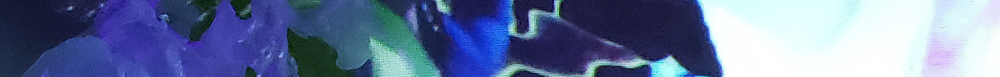
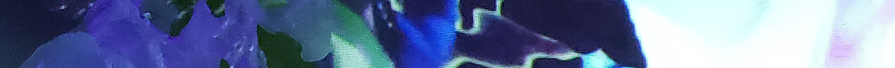

Migration of Entangled Ghosts
Wen Wen

The focus of Migration of Entangled Ghosts lies in the intersection of survival between marine organisms and plastics, merging together inanimate pollutants and lives. This work explores the future that may arise through the combining of sculpture and technology, creating a visual experience of two extremely contradictory substances in environmental ocean problems that are a serious concern yet commonly ignored.
Confronting viewers with the various properties of plastic, Wen creates the image of a floating ghost migration that is restricted to corrosion like a light-weighted toxic presence waving in transparency. Her work is both an imagination and a reality which directs viewers to the sadness caused by the plastic that she found, evoking her audience to realize their participation in this entanglement.

Artist Statement
Plastics are increasingly becoming an unavoidable substance in the ocean. They accumulate in gyres, floating through the world’s oceans and forming into large plastic patches. Plastic bags, litters, fishing nets, and all the single-use packaging that we use once and throw away will leave from one place and come back across the ocean years later. They break down into several micro-plastic pieces but will never biodegrade. This wave of non-living micro-plastics is migrating into the ocean, merging with marine organisms’ souls and bodies. Thus, plastics are turning the world’s oceans into an inanimate world.
With this installation piece titled Migration of Entangled Ghosts, I intend to reveal the pollution problem caused by our excessive consumption of plastic. Imagining a ghost floating in the room may allow the viewer to feel the entangling of marine life and the poisoning of seawater. I combine pictures, sculptures, and technology together in this piece to carry out an inanimate ghost migration. This could be a unique and imaginative experience concerning the future that may arise when two extremely contradictory substances merge.
In the future, seawater is covered by plastic; the bodies of trapped animals hang on abandoned fishing nets. Everything is lifeless, just as the sculpture in this room floats in midair. It is a warning regarding to people's behaviors affecting on ocean. In the end, we are also the ghosts that are entangled.
 
